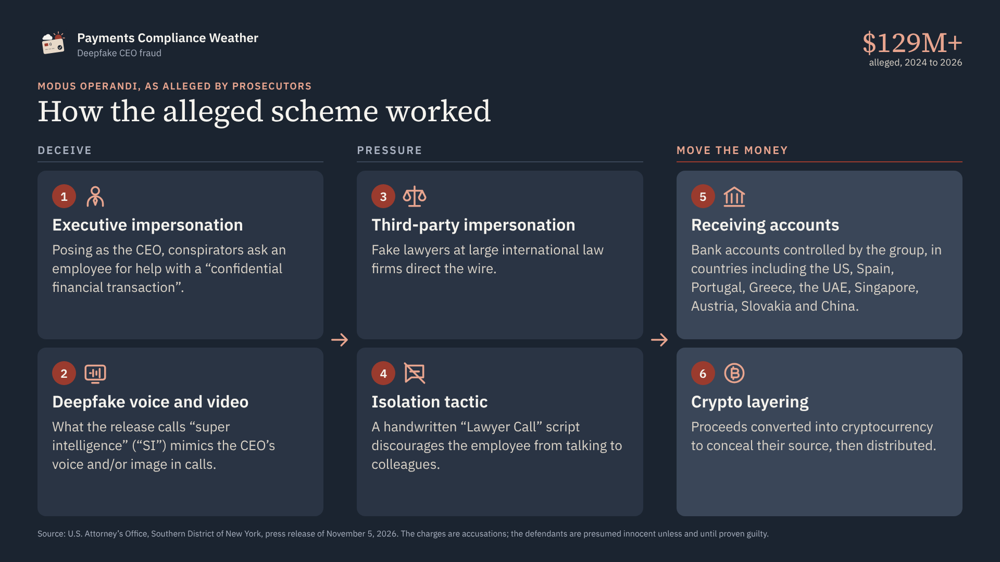
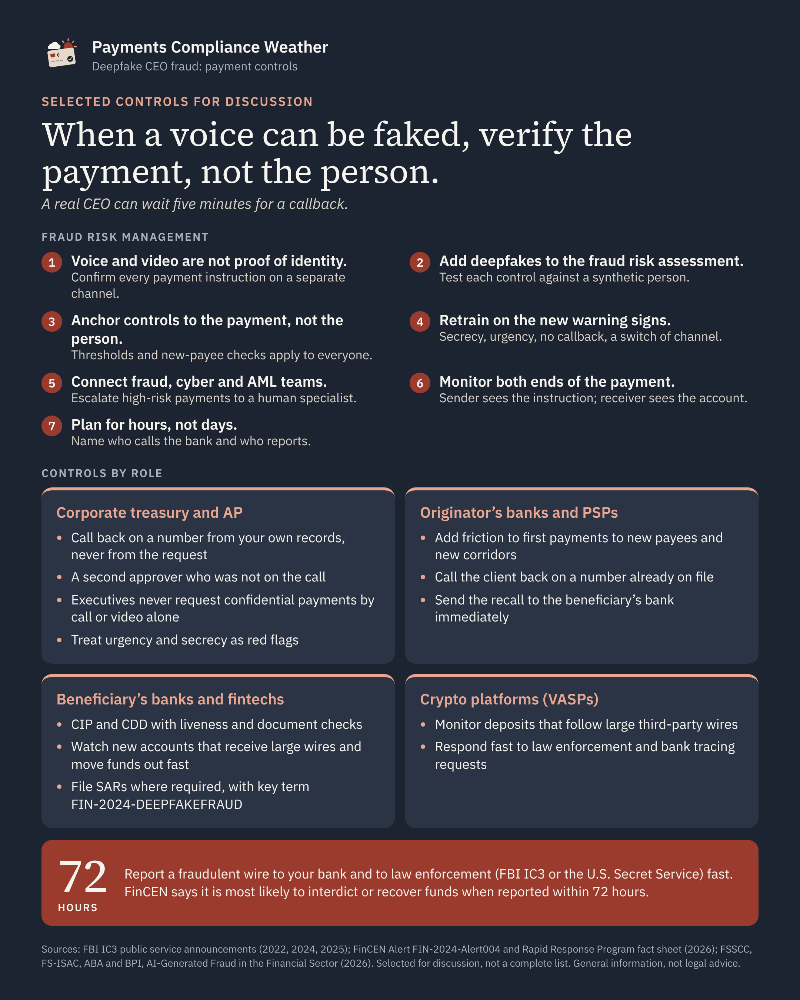

Payments Compliance Weather
Deepfake CEO fraud: what the $129 million case means for payments controls

As intelligence evolves, so do the ways fraud is perpetrated.
Impersonation is one of the oldest frauds there is. In 1738, a New York court convicted Tom Bell of forging a letter to defraud a family of £50. In 1741, in New Jersey, he posed as a minister, the Reverend John Rowland, and rode off with his host’s horse, money and papers.
For centuries, the tools barely changed: a forged letter, a borrowed name, later a spoofed email. Generative AI has changed them. Today, the impersonator can sound like the CEO, and look like the CEO.
What you can take from this edition: how the case maps to known fraud typologies and U.S. terms; controls by role, from corporate treasury to crypto platforms; points to bring into your fraud risk assessment; questions for your team; and the information to have ready inside FinCEN’s 72-hour window. Each point links to its official source, so it can be cited in training or a risk assessment.
The case
On November 5, 2026, the U.S. Attorney’s Office for the Southern District of New York charged Jacob Soall, Sharon Hazan and Guy Sheetrit with wire fraud, aggravated identity theft and money laundering. The charges are accusations; the defendants are presumed innocent unless and until proven guilty. According to the release, from 2024 to 2026:

You were trained to spot the typo. Now there isn’t one.
Executive impersonation has been on regulators’ radar for more than a decade. What has changed is how convincing it is. Somewhere, a training slide that says "look for spelling mistakes" is quietly becoming a museum piece.
- 2015: the FBI described fraudsters posing as lawyers handling confidential, time-sensitive matters and pressuring victims to send funds quickly or secretly. Between October 2013 and August 2015, it counted 8,179 victims of business email compromise and nearly $800 million in exposed losses.
- 2016: FinCEN warned that criminals hack or imitate executives’ email to send payment instructions, often marked “urgent”, “secret” or “confidential”, and sometimes based on emails from executives or attorneys that cannot be verified.
- 2022: the FBI reported fraudsters moving to virtual meetings, showing a still picture of the CEO or using deepfake audio and claiming the video was not working.
- 2024: the FBI warned that generative AI lets criminals commit fraud on a larger scale and correct the errors that used to serve as warning signs. It noted that “criminals generate videos for real time video chats with alleged company executives”, clone voices and create fake identity documents.
- 2025: the FBI’s 2025 Internet Crime Report counted more than 22,000 complaints with AI-related information and over $893 million in losses, including more than $30 million in business email compromise losses involving AI. It warned that AI-enabled synthetic content is “becoming increasingly difficult to detect and easier to make.”
- 2026: a financial sector paper led by FS-ISAC, the American Bankers Association and the Bank Policy Institute, AI-Generated Fraud in the Financial Sector, said impersonation attacks are “increasingly common”, including deepfakes of executives used to authorize payments. The case above is one example.
The pressure is the same: authority, urgency, secrecy. The warning signs are changing.

How it maps to known typologies
| Element | Industry term | Where it hits |
|---|---|---|
| Fake CEO and lawyers | Executive impersonation (CEO fraud), a form of business email compromise (BEC) | Corporate payment approvals |
| Cloned voice and image | Deepfake audio and video created with generative AI | Voice or video as a verification factor |
| Employee sends the wire | Authorized push payment (APP) fraud: a scam-induced payment by an authorized user | Authentication passes; the instruction is false |
| Accounts across many countries | Criminal-controlled or money mule accounts | Receiving institutions’ CIP, CDD and transaction monitoring |
| Conversion to crypto | Layering through virtual assets | Crypto platforms’ on-ramp monitoring |
A note on terms. "APP fraud" is the term used in the UK and widely across the industry. In the U.S., the Federal Reserve’s ScamClassifier model defines an authorized payment as "a payment entered or requested by a legitimate account owner or user from the owner’s account", and lists business email compromise (BEC) and "CEO/treasurer impostor" as examples of a "business impostor scam".
What this means for fraud risk management
When a voice, a face and an identity document can all be generated, fraud risk management can no longer rest on recognizing people. It has to rest on process. Kindred’s analysis:
- Stop treating voice and video as proof of identity. Any instruction to move money, on any channel, needs confirmation through a separate channel using contact details already on file. The financial sector paper describes calling back on a known number as the simplest defense against voice or video deepfakes. Your CEO will survive the inconvenience of a callback.
- Update the fraud risk assessment. Name deepfake impersonation, AI-generated identity documents and AI-written messages as scenarios, and test whether each control still works if the person on the other end is synthetic. Fraud and cybercrime are among FinCEN’s AML/CFT Priorities.
- Anchor controls to the payment, not the person. Dual control, value thresholds and extra checks for first-time beneficiaries and changes to payment details should apply no matter who is asking.
- Retrain for the new warning signs. Spelling mistakes and unfamiliar voices are fading. What remains: secrecy, urgency, pressure to bypass process, excuses to avoid a callback, and requests to move the conversation to a different messaging platform, a pretext the FBI flagged in 2025. Food for thought: why would a legitimate deal need to be hidden from your own finance team?
- Bring fraud, cyber and AML teams together. The financial sector paper recommends coordinating fraud and cyber teams, considering deepfake detection tools in customer channels, and escalating high-risk transactions to a human specialist.
- Watch both ends of the payment. The sending institution sees the instruction; the receiving institution sees the mule account. Both need monitoring tuned for AI-enabled fraud.
- Plan for hours, not days. Incident playbooks should name who calls the bank and who reports, because the first 72 hours matter most.
Controls by role
Corporate treasury and accounts payable
- Out-of-band verification for every high-value or first-time payment, using contact details from your own records, never from the request.
- Dual control: a second approver who was not on the call or thread.
- A written rule that executives never request confidential payments by call or video alone. A real CEO can wait five minutes for a callback.
- Deepfake awareness training. Treat urgency and secrecy as red flags, not reasons to comply.
Originator's banks and payment service providers (sending side)
- Risk-score wires by beneficiary account age (new payee), amount and corridor: a first payment to a new beneficiary in a new country deserves friction.
- Call the client back on a number already on file when a wire breaks pattern.
- Send a recall (request for return of funds) to the beneficiary's bank immediately. Once funds are credited, return depends on the beneficiary's bank.
Beneficiary's banks, fintechs and other account providers (receiving side)
- Customer identification (CIP) and customer due diligence (CDD), for individuals and businesses, that can withstand deepfakes: liveness detection and document authentication. A selfie check proves someone sent a face. It does not prove the face was ever in front of a camera. FinCEN’s 2024 deepfake alert reports more SARs describing fraudulent identity documents used to get past identity verification.
- Mule monitoring: new or low-activity accounts receiving large wires from unrelated companies, followed by rapid outbound transfers, especially to crypto platforms.
- File SARs where required. For deepfake-related activity, FinCEN asks filers to include the key term "FIN-2024-DEEPFAKEFRAUD" in SAR field 2 and in the narrative.
Crypto platforms (virtual asset service providers, or VASPs)
- Monitor on-ramp deposits from accounts that recently received large third-party wires.
- Respond quickly to law enforcement and bank tracing requests.

Response: the 72-hour window
FinCEN’s Rapid Response Program fact sheet says it is most likely to interdict or recover funds when fraudulent wires are reported to law enforcement within 72 hours. Victims should contact their bank immediately and file with the FBI’s IC3 or the nearest U.S. Secret Service field office. Since 2015, the program has helped interdict $1.8 billion and recover over $1 billion.
Pre-assign who calls the bank and who files, and keep the data ready: beneficiary name, account and bank, receiving branch country, wire date, amount, currency and a short summary. Fraudsters do not keep office hours, so your escalation list should not either.
Questions for your team
- Can one person release a high-value wire on the strength of a call or video?
- Does your callback use contact details from your own records?
- Would your KYC catch an AI-generated ID or a deepfake selfie?
- Who makes the first call inside the 72-hour window?
If the answer to question 1 is yes, the deepfake does not need to be perfect. It only needs to convince one person.
How is your organization adapting its controls to deepfakes? I’d like to hear where you see the gaps.
Sources
- U.S. Attorney’s Office, Southern District of New York: Three Foreign Nationals Arrested And Charged With Scheme To Use Super Intelligence To Defraud Companies Of $129 Million, November 5, 2026
- Jack Lynch, “Of Sharpers, Mumpers, and Fourberies: Some Early American Impostors and Rogues”, Colonial Williamsburg Journal, Spring 2005
- FBI IC3 PSA I-082715a-PSA: Business Email Compromise, August 27, 2015
- FinCEN Advisory FIN-2016-A003: Advisory to Financial Institutions on E-Mail Fraud Against Businesses, September 6, 2016
- FBI IC3 PSA I-021622-PSA: Business Email Compromise: Virtual Meeting Platforms, February 16, 2022
- FinCEN Issues Alert on Fraud Schemes Involving Deepfake Media Targeting Financial Institutions, November 13, 2024
- FBI IC3 PSA I-120324-PSA: Criminals Use Generative Artificial Intelligence to Facilitate Financial Fraud, December 3, 2024
- FBI IC3 PSA I-051525-PSA: Senior US Officials Impersonated in Malicious Messaging Campaign, May 15, 2025
- FBI IC3: 2025 Internet Crime Report
- FSSCC / FS-ISAC, ABA, BPI: AI-Generated Fraud in the Financial Sector: Threat Categories and Defense Strategies, 2026
- FinCEN: Anti-Money Laundering and Countering the Financing of Terrorism National Priorities, June 30, 2021
- Federal Reserve FedPayments Improvement: ScamClassifier model and definitions
- FinCEN: Rapid Response Program fact sheet, April 15, 2026
- FBI Internet Crime Complaint Center (IC3)
General information based on public sources, not legal advice. The charges are accusations, and the defendants are presumed innocent unless and until proven guilty.